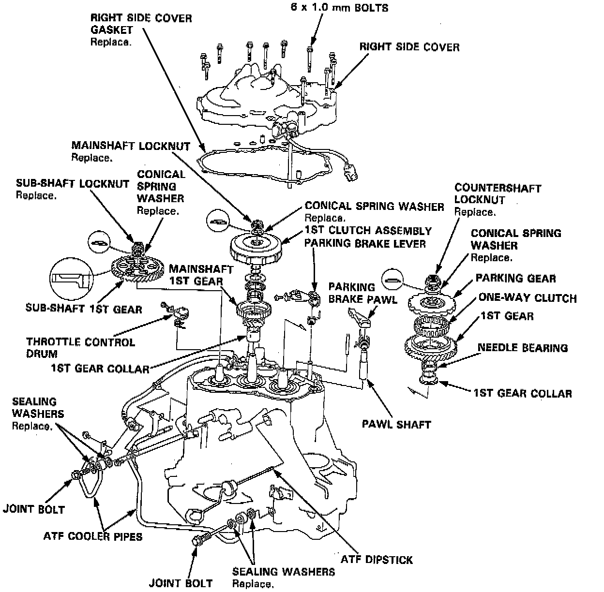
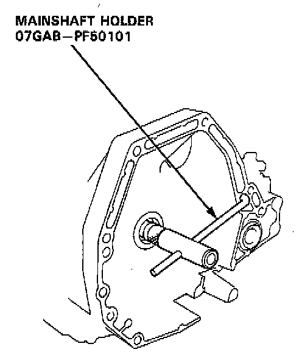
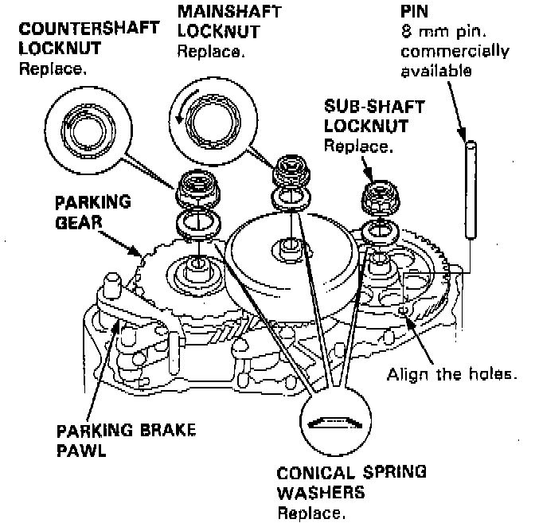
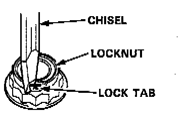
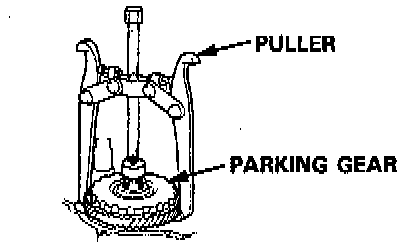

Right Side Cover
TOOLS REQUIRED- 07GAB-PF50101 Mainshaft Holder
- Or Equivalent

NOTE:
- Clean all parts thoroughly in solvent or carburetor cleaner, and dry with compressed air.
- Blow out all passages.
- When removing the transmission right side cover, replace the following:
- Right side cover gasket
- Lock washers
- O-rings
- Each shaft locknut
- Conical spring washers
- Sealing washers
1. Remove the 13 bolts securing the right side cover, then remove the tight side cover.

2. Slip the special tool onto the mainshaft as shown.
3. Engage the parking brake pawl with the parking gear.

4. Align the hole of the sub-shaft 1st gear with the hole of the the transmission housing, then insert a pin to lock the sub-shaft while removing the sub-shaft locknut.

5. Cut the lock tabs of the each shaft locknut using a chisel as shown. Then remove the locknut from each shaft.
NOTE:
- Mainshaft and countershaft locknuts have lefthand threads.
- Clean the old countershaft locknut, it is used to press the parking gear on the countershaft.
- Always wear safety glasses.
CAUTION: Keep all of the chiseled particles out of the transmission.
6. Remove the lock pin that was installed to hold the sub-shaft.
7. Remove the special tool from the mainshaft after removing the locknut.
8. Remove the 1st clutch and mainshaft 1st gear assembly from the mainshaft.
9. Remove the sub-shaft 1st gear.
10. Remove the parking brake pawl.

11. Using a universal two jaw puller, remove the parking gear, one-way clutch and countershaft 1st gear assembly.
12. Remove the parking brake lever from the control shaft.
13. Remove the throttle control drum from the throttle control shaft.
14. Remove the ATF cooler pipes.
15. Remove the ATF dipstick.